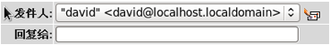
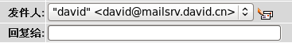
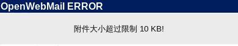
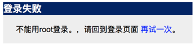
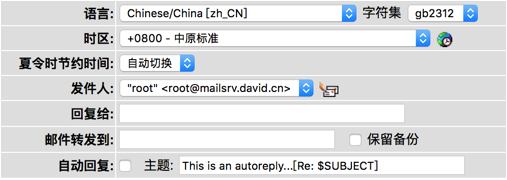
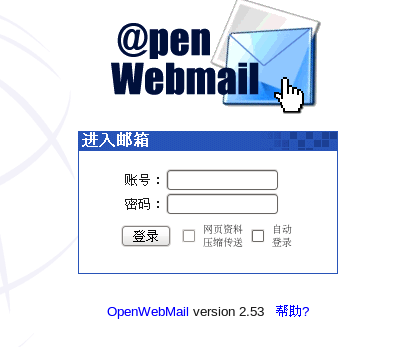
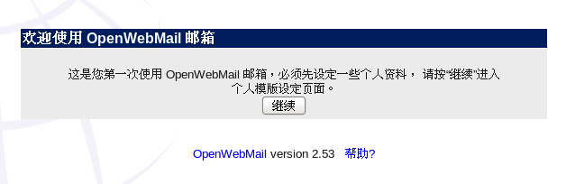
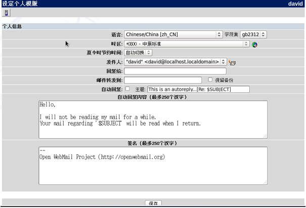

安装openwebmail
通过修改配置文件openwebmail.conf，实现个性化邮箱定制。用户可以自由的更改邮箱logo、域名、容量
、签名等信息。
1、重定向index，快速打开邮箱。将下面的内容复制到“/var/www/html/index.html”，这样就可以直接通过“127.0.0.1”打开邮箱
|
[root@localhost
openwebmail]# gedit /var/www/html/index.html
<html>
<head><meta
http-equiv="Refresh"
content="0;URL=/cgi-bin/openwebmail/openwebmail.pl">
</head>
<body
onload="window.open('/cgi-bin/openwebmail/openwebmail.pl','_top')">
</body>
</html>
|
2、修改登录logo。将“/var/www/html/openwebmail/images/openwebmail.gif”替换成自己的logo，注意名字不要变
3、更改logo链接。登录框上方的logo有一个默认的链接地址，我们可以通过修改配置文件中的参数“logo_link”来使它重定向到我们自己的网站
|
[root@localhost openwebmail]# gedit
/var/www/cgi-bin/openwebmail/etc/openwebmail.conf
logo_link http://www.baidu.com
|
4、修改发件人的域名。在配置文件中有一个参数domainnames，我们可以将它改为自己的邮箱域名。这样在发件的时候，就会显示出正确的邮箱域名。
|
[root@localhost openwebmail]# gedit
/var/www/cgi-bin/openwebmail/etc/openwebmail.conf
domainnames
mailsrv.david.cn
|
修改前

修改后

5、修改附件大小限制。附件太大会降低服务器的效率，因此我们必须合理的设置附件的大小，可以通过参数attlimit来设置。
|
[root@localhost openwebmail]# gedit
/var/www/cgi-bin/openwebmail/etc/openwebmail.conf
attlimit
10
|
修改之后，发送一个邮件，结果如下

6、允许root登录。由于root用户的权利太大，因此默认不允许root登录。我们可以通过参数allowed_rootloginip来设置允许某个ip地址使用root登录，这样相对来说安全一些
|
[root@localhost openwebmail]# gedit /var/www/cgi-bin/openwebmail/etc/openwebmail.conf
allowed_loginip
192.168.0.112 //只允许指定的ip登录root
#allowed_loginip
all //允许所有的ip地址使用root登录
|
修改前

修改后

7、修改身份认证文件，这个文件需要从defaults目录拷贝，然后修改两个参数“passwdfile_enctypted“和”passwdmkdb“
|
[root@localhost openwebmail]# cp etc/defaults/auth_unix.conf etc/
[root@localhost
openwebmail]# gedit etc/auth_unix.conf
passwdfile_encrypted /etc/shadow
passwdmkdb none
|
8、修改dbm文件，首先从defaults目录下拷贝，然后改变参数“dbmopen_ext“和”dbmopen_haslock“
|
[root@localhost
openwebmail]# cp etc/defaults/dbm.conf etc/
dbm_ext .pag
dbmopen_ext none
dbmopen_haslock no
|
9、初始化openwebmail服务
|
[root@localhost
openwebmail]# ./openwebmail-tool.pl --init
creating db
/var/www/cgi-bin/openwebmail/etc/maps/b2g ...done.
...done.
Welcome to the
OpenWebMail!
Send the site
report?(Y/n) yes //这里必须输入yes
sending report...
Thank you.
|
10、重启Apache
|
[root@localhost
openwebmail]# service httpd restart
停止 httpd：
[确定]
正在启动 httpd：httpd:
Could not reliably determine the server's fully qualified domain name, using
localhost.localdomain for ServerName
[确定]
|
11、在浏览器输入“127.0.0.1/cgi-bin/openwebmail/openwebmail.pl“,可以看到下面的登录窗口

12、在登录窗口输入一个已经存在的用户名和密码，由于是第一次登录，我们需要做一些设置

13、设置个人模板

Copyright@david
zhytwj2018@163.com